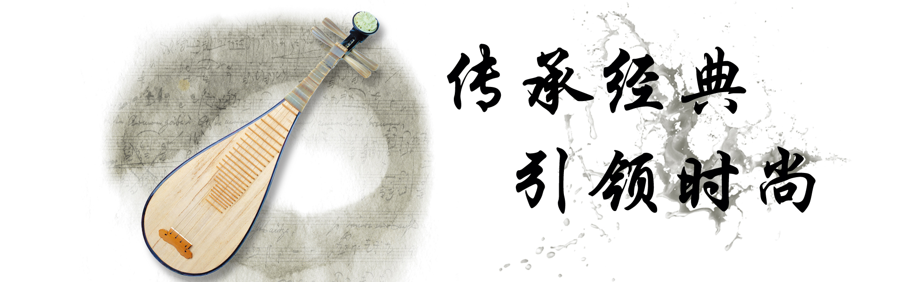
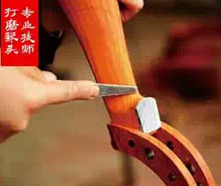
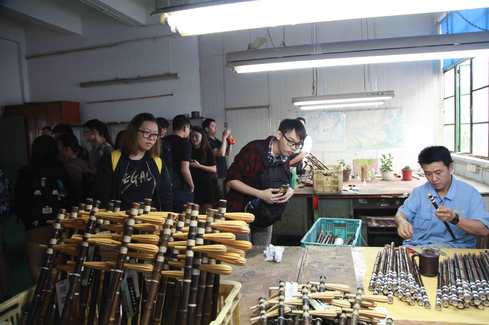
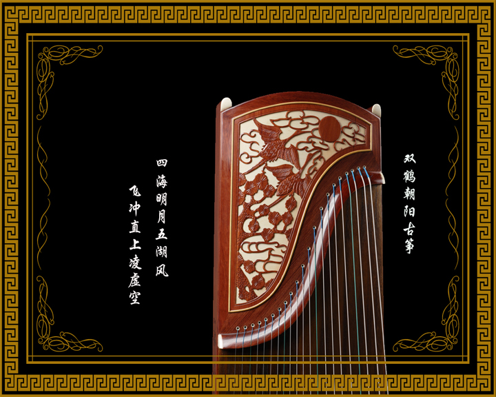

饶阳乐器有限公司由饶阳县民族乐器一厂和香港利源贸易公司于1993年共同合资创办，是一家集研发、生产、销售于一体的综合性乐器制造企业。经过多年的打造和磨炼，已成为全国最大的专业生产民族乐器基地之一。公司自创立以来，始终以追求卓越品质，提供真诚服务为宗旨，运用多年的乐器制造经验和先进技术，使公司生产的韵牌国乐产品，体现了选材讲究、工艺精湛、音色纯真的特点，深受专业演奏家和音乐爱好者的青睐。公司主要产品有古筝、二胡、琵琶、柳琴、扬琴、阮、三弦、月琴等百余个品种及乐器配件，畅销国内各地以及新加坡、马来西亚、日本、美国、加拿大、中国香港、中国台湾等国家和地区。

- ·饶阳民乐参展2016年上海国际乐器展[2016-10-31]
- ·新品推荐[2017-5-23]
- ·实施ISO9001：2015新版培训[2017-3-27]
- ·我公司大力支持“国之器▪乐为美”中国传统乐器主题展[2017-3-1]
- ·2016年韵牌民乐展示会[2016-11-1]
- ·关于启用产品新防伪标识的通知[2016-2-17]
- ·“专业 经典” 韵牌民乐大受青睐[2015-10-21]
- ·产品广告[2015-4-1]
- ·402型扬琴研讨评审会顺利召开[2014-7-21]
- ·企业邮箱更改通知[2013-10-18]
新加坡国家青年华乐团访饶阳县民族乐器厂

2017年6月19日上午，饶阳县民族乐器厂迎来了新加坡国家青年华乐团的来访。新加坡华乐团行政总监何伟山，新加坡国家青年华乐团指挥郭勇德、副指挥倪恩辉带领九十余名新加坡国家青年华乐团成员，参观了民族乐器陈列馆、生产车间。 在民族乐器陈列馆，乐团成员们了解了饶阳民族乐器制作行业半个多世纪的发展历程，欣赏了展现中国民族乐器数千年历史文化的仿古、时尚、微型、精品、创新等系列的民族乐器。在生产车间，乐团成员们近距离观察二胡、笛子、箫等民族乐器制作技艺的同时，也不失时机地与制作师傅进行交流，咨询乐器制作、保养等方面的知识，让自己更加了解手中的乐器。
古筝的演变

古筝的形制因地制宜,有所不同,但其结构原理基本一致。它的基本构造为:筝体(呈长方体);面板、底板(用桐木或白松板制成);岳山(弦枕,有前岳山、后岳山);琴码(筝码、雁柱);音梁;音箱等部件。面板上立琴码装弦,弹弦而发音。随着时代变迁,琴弦的数量在不断变化:《风俗通》中的5弦;战国时期的12弦;隋唐时期的13弦;元明时期的14、15弦;清朝的16弦、18弦、19弦;20世纪50年代前后出现了21弦、23弦、29弦等多弦古筝;20世纪60年代,现代21弦古筝,长1.63米,S形岳山,弦为钢丝外缠尼龙弦,为目前全国通用的标准样式。